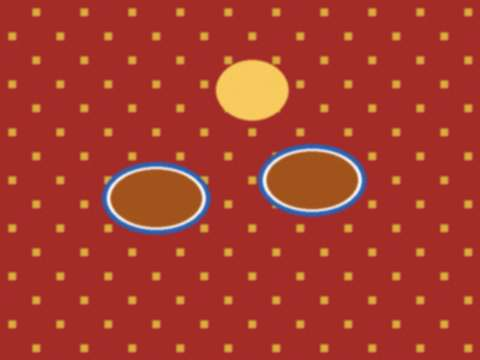
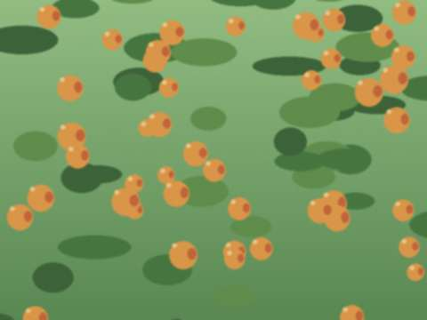
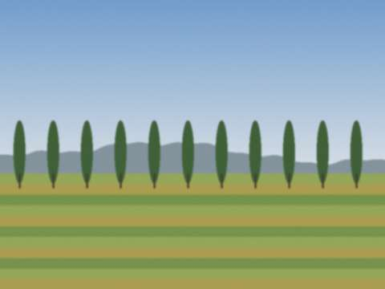

Oct252026
Sunday, October 25th, 2026 at 3:30 pm by Viktor Ivanovich
Closed the dacha yesterday. Drained the water, the pipes wrapped, the last apples in the boxes, the jars on the balcony (twenty-eight this year; the doctor says less salt, so less jars).
The heating came on 15 October, and already the smog is back over the Chu plain, the radio says unhealthy again. At the bazaar the dollar is 11 som and more, at the bank 8.40, and my pension is in som. I will not talk about it more. You know it yourself.
In December Dima comes with his wife and my great-grandson, first time. Before that I must fix the radiator in the small room. 86 years and still the shift engineer.
Posted in Dacha | 2 Comments »
Nov302025
Sunday, November 30th, 2025 at 1:10 pm by Viktor Ivanovich
Counting what we have. Twenty-nine jars of pickles, six of the yellow tomato salad, eleven of apricot jam, two of the plums (a gift). Plus the dried apples in the cotton bag. For one old man this is an army.

Twenty-nine jars and one kettle. The balcony shelf.I make a list of who should get which jar: Kolya (pickles), Rustam (jam), the neighbour on the second floor (tomatoes, for the clothes box), Valentina by the post (apricot jam, she is the only one who sends the jar back with a thank-you note).
Posted in Dacha | 1 Comment »
Jul142024
Sunday, July 14th, 2024 at 9:30 pm by Viktor Ivanovich
The old apricot gave again, even more than in 2010. 85 kilos. The neighbours helped to pick, and I gave a bucket to each. I have no strength for the jam, so the neighbour from the second floor comes on Wednesday and does it with me. Seven jars so far.

The old apricot tree, 12 July. Still standing, like me.
Posted in Dacha | 2 Comments »
Sep242017
Sunday, September 24th, 2017 at 7:45 pm by Viktor Ivanovich
The canal is dry since Wednesday. The water master does not answer the telephone, and the cooperative chairman says the water goes first to the big farms. I went to the canal with the bucket and found out the reason: somebody dammed it at the third bridge with the old tires. I removed three tires. I am 77, and I feel like a hero.
The water came by the evening, and the neighbours looked at me as at a saint. Please, do not do such things at home.
Posted in Dacha | 2 Comments »
Jun182017
Sunday, June 18th, 2017 at 6:30 pm by Viktor Ivanovich
Today my first guests this year at the dacha: Kolya and Rustam with their wives. Rustam brought a watermelon from the bazaar, a very sweet one, and Kolya brought a bottle of kvass for himself, because the doctors do not allow anything stronger for any of us. We sat under the apricot tree until the evening. Kolya cried a bit when we talked about Lyudmila, and said it is the dust.
 The table under the apricot tree, with the watermelon.
The table under the apricot tree, with the watermelon.We talked about the old shift. In 1975 we were twenty-two people, and now four. I said: let's not be sad, let's be a good four.
Posted in Dacha | 2 Comments »
Apr232017
Sunday, April 23rd, 2017 at 4:45 pm by Viktor Ivanovich
I opened the dacha. Alone this year. The apple tree is alive. I planted Lyudmila's (her mother's) yellow tomatoes, the seeds she kept in the envelope.
I decided: I will write again. Every Sunday if possible.
Posted in Dacha | No Comments »
Sep62015
Sunday, September 6th, 2015 at 5:20 pm by Viktor Ivanovich
Frost forecast for Tuesday, so today we took away all the green tomatoes and put them in the box with newspaper under the bed, with two red ones to "teach" them. The method of my mother.
 The dacha, 6 September, the day before the frost.
The dacha, 6 September, the day before the frost.Lyudmila does not feel strong this autumn. She sat in the chair near the house for most of the day, with the cat. I did everything alone. But she told me where to put each box, and from the chair she controlled the whole operation like a chief engineer.
Posted in Dacha | 2 Comments »
Jun242012
Sunday, June 24th, 2012 at 8:15 pm by Viktor Ivanovich
Friday at 4 p.m. the sky went dark green and a hail the size of walnuts came down on the dacha for eleven minutes. We hid in the house, and Lyudmila counted the panes of the greenhouse after, not the tomatoes. Two panes. The tomatoes were under the film and are fine, but the cucumbers got a beating.
 After the hail: the cooperative road and the white ice in the ditches, 22 June.
After the hail: the cooperative road and the white ice in the ditches, 22 June.The chairman, Mikhail Grigorievich Pestov, walked along the plots with the notebook and wrote down the damage for the insurance. Nobody has the insurance. But he wrote.
Posted in Dacha | 1 Comment »
Aug12010
Sunday, August 1st, 2010 at 8:30 pm by Viktor Ivanovich
The old apricot gave 60 kilos this year and the young one 15. We dried them on the roof of the shed on the white sheets from the 1970s. Lyudmila makes the jam, I carry the buckets, and Dima eats when he comes. Everybody has a function.
Apricots on the shed roof, 1 August. The sheets are older than my grandson.
Posted in Dacha | 1 Comment »
Sep22008
Tuesday, September 2nd, 2008 at 8:10 pm by Viktor Ivanovich
For those who asked (two people!), our recipe for cucumbers for the winter, in a three-litre jar: cucumbers, three cloves of garlic, dill umbrellas, a leaf of horseradish, a leaf of cherry, black pepper. Brine: 2 tablespoons salt for one litre of water, boil. Pour boiling, close with the machine. Turn the jar upside down under the blanket.
Forty-two jars this year. The balcony is full. Lyudmila says enough. I say there is no "enough" in pickles.
Posted in Dacha | 1 Comment »
Jul202008
Sunday, July 20th, 2008 at 9:00 pm by Viktor Ivanovich
+41 in the shade today. I measured on the dacha thermometer, on the north wall under the vine. The cat sits under the bed. The water master was not drunk, and the canal gave water at six in the morning, so we watered before the sun. Short post, it is too hot for a long one.

The thermometer on the north wall, 41 degrees. Proof.
Posted in Dacha | 2 Comments »
Jun152008
Sunday, June 15th, 2008 at 7:30 pm by Viktor Ivanovich
The dacha is 14 km from the city, on the right bank of the Chu, in the cooperative "Neftyanik-2" (from the refinery, of course: in 1978 they gave the plots to the workers). Six sotkas. A small house that I built myself in 1979-81, from the bricks that were "left over".
This year: tomatoes (Bychye Serdtse and Lyudmila's yellow ones), cucumbers, peppers, dill, the potatoes, two apricot trees and one very old apple. The water comes on Tuesday and Friday from the canal, if the water master is not drunk.
New: Dima changed the colour of this page to green, "for the dacha". I like it.
 (photo will be here)
(photo will be here)
Posted in Dacha | 2 Comments »
Apr272008
Sunday, April 27th, 2008 at 5:20 pm by Viktor Ivanovich
Sunday at the dacha, first digging. The ground is still cold, but the apricot is flowering, early. We put in the early potatoes ("Nevsky", the seed from the Kobozev station market, not cheap) and the onions.
Now I understand the economic situation by the seed. The potato seed this year costs 1.9 som a kilo, last year 1.3. The seller says: "it is the new rate". I say: "potatoes do not know the rate". He says: "they know, uncle, they know".
Posted in Dacha | 1 Comment »